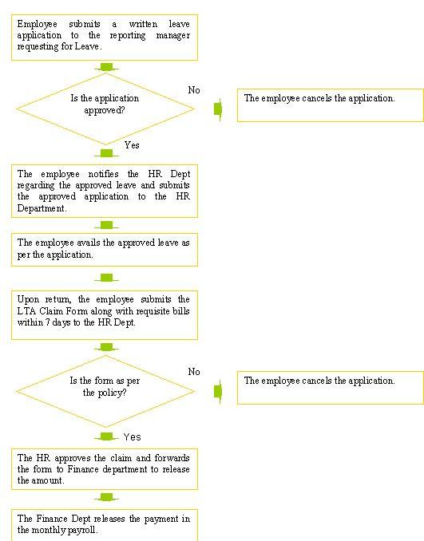

Leave Travel Allowance Policy
Policy
The policy aims to provide financial assistance to employees and their dependents for personal travel within the country while on leave.
Eligibility
The policy applies to all permanent employees associated with IETS.
Terms & Conditions
- The LTA is available to all employees once in every financial year.
- Employees will be eligible to claim LTA only after confirmation and completion of 1 year of service at IETS, whichever is later.
- LTA paid to the employee is taxable, however, the employee may claim Income tax
exemption by providing a declaration indicating:
- Destination
- Mode of Travel
- Members of family traveled
- Total amount claimed
- In order to claim the LTA, the employee must avail a minimum of 5 continuous Earned Leave excluding weekends or public holidays.
- In order to avail the LTA, the employee must either submit the request for the same before traveling or within one week of resuming the duty. In case, the employee has taken a LTA advance, he/she must submit the requisite bills within one week of resuming the duty.
- The employee may carry forward the unutilized LTA amount to the next year,upto a maximum period of four years. Any LTA in excess of four years entitlement will lapse. Four years in this case will include the unutilized LTA of previous year and the LTA for the current year.
- In case the LTA entitlements are revised during the course of a year, employee who have availed the LTA before the revision will be entitled to the balance amount.
- Leave Travel Allowance would be given once every financial year after confirmation and completion of one year of continuous service. Thus, if an employee joins on September 1, 2006, he would be eligible to claim LTA on or after September 1, 2007. However the quantum of LTA claimed would be as per the entitlement in the year April 2007 - March 2008 in addition to pro rata entitlement for the period September 2006 – March 2007 for that particular grade. He would again be eligible to claim LTA in the financial year beginning on April 1, 2008.
- An employee will be responsible for the income-tax liability that the benefit may entail. As a ground rule, any LTA paid to an employee will be treated as taxable in his hands, and it is thus the responsibility of the employee to claim Income Tax exemption on the amount paid. This may be done by providing a declaration indicating destination, mode of travel, members of family traveled and total amount claimed. A brief note on the tax implication of LTA is attached:
Tax Implications for LTA
- LTA is not completely exempted from Income Tax unless the employee actually incurs expenses equivalent or exceeding the amount of LTA on travel for self and family. The exemption is applicable only for 2 journeys in a block of 4 calendar years starting from January 1, 1994 and only for destinations within the country.
- Amount of Exemption: LTA will be exempted from Income Tax provided:
- Individual travels by rail - an amount not exceeding A/C IInd class fare by the shortest route to the place of destination.
- Journey by air - an amount not exceeding economy class air fare by a National carrier by the shortest route to the destination.
- When the individual travel to a destination which is not connected by rail – exempted amount shall be:
- In case there is a recognized public transport - an amount not exceeding the Ist or deluxe class fare as the case may be, on such transport by the shortest route to the place of destination;
- In case there is no recognized public transport - an amount equivalent to the air-conditioned IInd class rail fare for the distance of the journey by the shortest route.
Process
